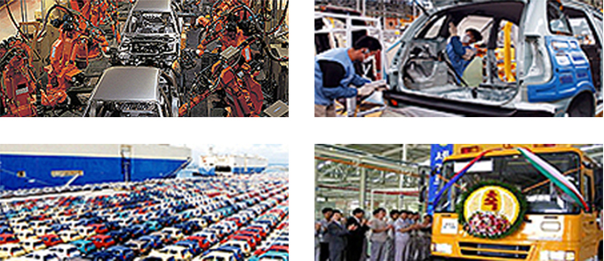

汽车产业
- Home
- 主要产业
- 汽车产业
汽车产业
单纯以汽车工程实现最多年产155万台规模的现代汽车（株）、 专业生产客车企业大宇客车（株）等，位于蔚山的260余家汽车行业企业全年创下360亿美元以上销售额，占大韩民国汽车产值的21%以上，全年出口205亿美元，一跃成为世界五大汽车工业城市。
此外，2016年建成的绿色环保汽车技术中心，使电力汽车、混合汽车、氢气燃料电池汽车等环保汽车的开发进入正轨，据此蔚山正朝着电力汽车产业核心基地的方向发展。
尤其是2009年大韩民国首个混合动力汽车投入批量生产，2013年又于世界首次对氢燃料电瓶汽车进行了商用化，并开始出口到丹麦等欧洲国家。 蔚山已然成了技术集约型汽车生产的领航人。


蔚山汽车工业现状(2016年)
생산액(20.1%) - 울산(395,304억원), 전국(1,970,448억원)
부가가치(18.0%) - 울산(101,772억원), 전국(565,336억원)
사업체수(6.2%) - 울산(291억원), 전국(4,666억원)
종사자수(14.2%) - 울산(50,445억원), 전국(354,504억원)

蔚山完成车生产企业现状
现代汽车蔚山工厂
- 工厂规模 : 占地5,050,000㎡、建筑面积2,314,000㎡
- 职工人数 : 35,000人
- 生产能力 : 5,400台 / 天
- 产量 : 139万台 / 年
大宇客车
- 工厂规模 : 73,847㎡
- 生产能力 : 10,000台/年
- 职工人数 : 930人